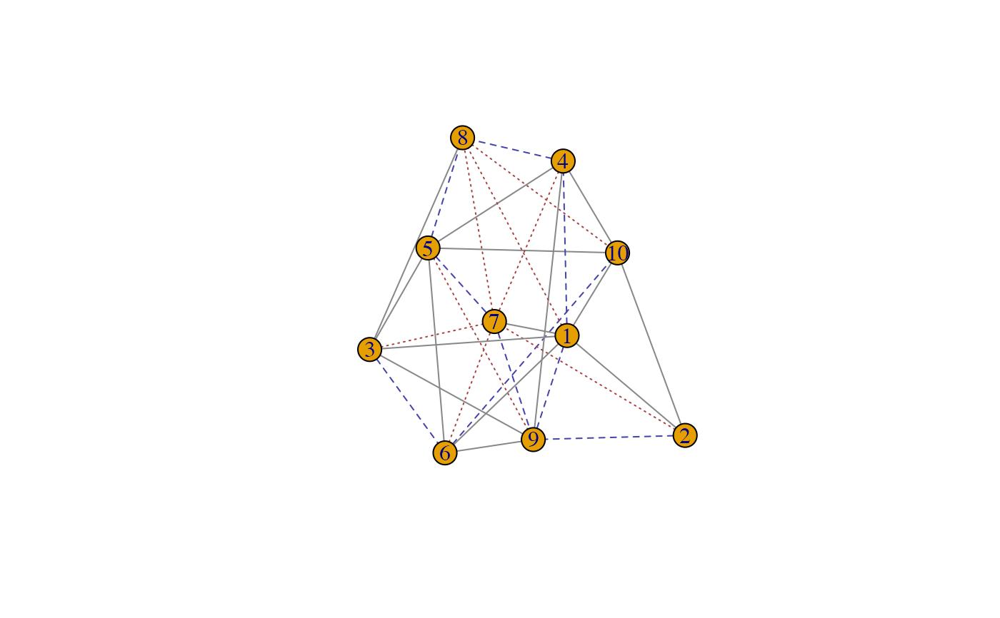
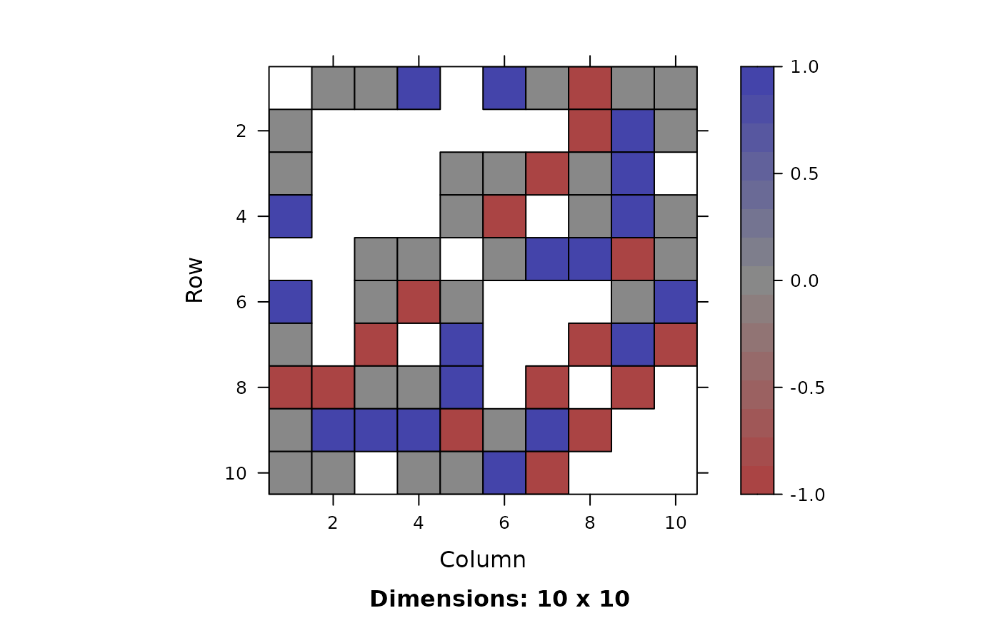

Spectral Graph Matching Methods: Umeyama Algorithm
Arguments
- A
A matrix, igraph object, or list of either.
- B
A matrix, igraph object, or list of either.
- seeds
A vector of integers or logicals, a matrix or a data frame. If the seed pairs have the same indices in both graphs then seeds can be a vector. If not, seeds must be a matrix or a data frame, with the first column being the indices of \(G_1\) and the second column being the corresponding indices of \(G_2\).
- similarity
A matrix. An
n-by-nmatrix containing vertex similarities.
Value
graph_match_Umeyama returns an object of class "graphMatch" which is a list
containing the following components:
- corr_A
matching correspondence in \(G_1\)
- corr_B
matching correspondence in \(G_2\)
- soft
the functional similarity score matrix with which one can extract more than one matching candidates
- lap_method
Choice for solving the LAP
- seeds
a vector of logicals indicating if the corresponding vertex is a seed
References
S. Umeyama (1988), An eigendecomposition approach to weighted graph matching problems. IEEE TPAMI. USA, pages 695-703.
Examples
# match G_1 & G_2 using Umeyama algorithm
G <- sample_correlated_gnp_pair(10, .9, .5)
g1 <- G$graph1
g2 <- G$graph2
startm <- matrix(0, 10, 10)
diag(startm)[1:4] <- 1
GM_Umeyama <- gm(g1, g2, similarity = startm, method = "Umeyama")
GM_Umeyama
#> gm(A = g1, B = g2, similarity = startm, method = "Umeyama")
#>
#> Match (10 x 10):
#> corr_A corr_B
#> 1 1 1
#> 2 2 2
#> 3 3 3
#> 4 4 4
#> 5 5 5
#> 6 6 8
#> 7 7 6
#> 8 8 9
#> 9 9 7
#> 10 10 10
# generate the corresponding permutation matrix
GM_Umeyama[]
#> 10 x 10 sparse Matrix of class "dgCMatrix"
#>
#> [1,] 1 . . . . . . . . .
#> [2,] . 1 . . . . . . . .
#> [3,] . . 1 . . . . . . .
#> [4,] . . . 1 . . . . . .
#> [5,] . . . . 1 . . . . .
#> [6,] . . . . . . . 1 . .
#> [7,] . . . . . 1 . . . .
#> [8,] . . . . . . . . 1 .
#> [9,] . . . . . . 1 . . .
#> [10,] . . . . . . . . . 1
summary(GM_Umeyama, g1, g2)
#> Call: gm(A = g1, B = g2, similarity = startm, method = "Umeyama")
#>
#> # Matches: 10, # Seeds: 0, # Vertices: 10, 10
#>
#> common_edges 15.000000
#> missing_edges 9.000000
#> extra_edges 8.000000
#> fnorm 5.830952
# visualize the edge-wise matching performance
plot(g1, g2, GM_Umeyama)

plot(g1[], g2[], GM_Umeyama)
